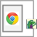
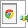
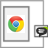

Share-it Options Choose the menu items you like to appear in the Share-it context menu
Share-it Extension created and maintained by Timothy Tocci
For other add-ons not hosted in the Chrome store you can try my repository.
Menu items will be shown in selected order from top to bottom.
Changes will take place the next time you start your browser.
Or, if you don't want to close the browser you could uncheck and recheck the enabled box next to this extension on the
Extensions tab page.
Complete list of internal URLs for Google Chrome (right click and "Open link in new tab")
Try chrome://memory
to see how much memory space is taken by these extensions. (I try to keep them as lean as possible)

Analyze-it
Opens various page analytic tools - SEO, CMS, & WHOIS information for any page you visit.
Plurk-it
Context menu for using plurk.com. Context menu item that plurks the current page. If text is selected provides a menu item to search plurks for the textUseful-New-Tab-Page
This extension replaces the New Tab page with a more useful interface. Minimalistic that loads no external resources, this New Tab page extension shows you the Top 20 Sites, Recently Bookmarked sites as well as the last pages visited from the history.
America Online Web Search
This is an Omnibox extension that enables you to search the web using America Online in your browser. To use, type 'aol' & space, and a query term into the Omnibox.Amazon Web Search
This is an Omnibox extension that enables you to search the web using Amazon Smart Search from the browser. This extension DOES NOT search the Amazon Web Services documentation. To use, type 'aws' & space, and a query term into the Omnibox.

Mozilla Open Directory Project Search
Allows you to search the Mozilla Open Directory Project (dmoz.org) from the Omnibox. To use just type 'dmoz', a space, and your query term. It will open up a new tab with the search results of your query.

Groups Search
Search Google Groups from the Omnibox. To use, type 'ggs' & space, and a query term into the Omnibox.
